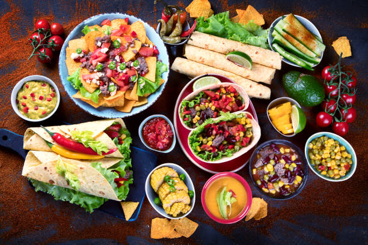

Recipies! Select your Cuisine

North Indian Food
North Indian cuisine is known for its rich and flavorful dishes, often using tandoor ovens and a variety of spices.
Dive in!
South Indian Food
South Indian cuisine is known for its lighter dishes, often using rice and lentils.
Dive in!
Italian Food
Italian cuisine is known for its simple and fresh ingredients, often using pasta, pizza, and tomato sauce.
Dive in!

Mexican Food
Mexican cuisine is known for its spicy and flavorful dishes, often using chili peppers, corn, and beans.
Dive in!Chinese Food
Chinese cuisine is known for its variety of dishes, often using stir-fries, noodles, and rice.
Dive in!Japanese Food
Japanese cuisine is known for its fresh and delicate dishes, often using sushi, sashimi, and rice.
Dive in!